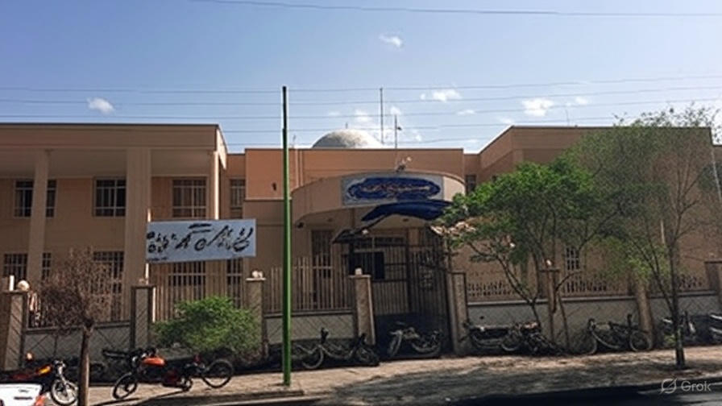

هنرستان فیض
درباره هنرستان
هنرستان فنی و حرفهای ملامحسن فیض کاشان یکی از قدیمیترین و معتبرترین مراکز آموزش فنی و حرفهای در استان اصفهان و شهر تاریخی کاشان است. این هنرستان که به نام عالم بزرگ شیعه، ملامحسن فیض کاشانی نامگذاری شده، با هدف تربیت نیروی انسانی ماهر و کارآفرین برای بازار کار کشور تأسیس شده و سالهاست که بهعنوان پل ارتباطی بین آموزش و صنعت در منطقه شناخته میشود.
هنرستان ملامحسن فیض کاشان علاوه بر آموزشهای تئوری و عملی قوی، دارای کادر مجرب، مربیان صنعتی و همکاری مستمر با کارخانهها و کارگاههای شهر کاشان است. بسیاری از دانشآموزان این هنرستان پس از گرفتن دیپلم، مستقیماً مشغول به کار میشوند یا با ادامه تحصیل در دانشگاههای علمی-کاربردی و فنیوحرفهای به مدارج بالاتر میرسند.
{kind=link}
رشته های اصلی هنرستان

رشته کامپیوتر (شبکه و نرمافزار کامپیوتر): دانشآموزان در این رشته با برنامهنویسی، شبکههای کامپیوتری، طراحی وب، امنیت سایبری و تعمیرات سختافزار آشنا میشوند.
کارگاههای مجهز و آزمایشگاههای بهروز این امکان را میدهند که دانشآموزان پروژههای واقعی انجام دهند و مدارک فنی معتبر دریافت کنند.
{kind=link}

رشته مکانیک (ماشینابزار و ساخت و تولید): در این رشته دانشآموزان با تراشکاری، فرزکاری، CNC، جوشکاری، طراحی و ساخت قطعات صنعتی و نقشهکشی صنعتی آشنا میشوند. کارگاههای سنگین و مجهز هنرستان فرصت تمرین عملی بسیار خوبی فراهم میکند.
تجهیزات
تجهیزات آموزشی
(سایت کامپیوتر)
دو سایت مجهز به سیستم های پیشرفته و نو
هر سایت دارای هشت سیستم هست
و هر سیستم برای دو هنرجو
*
کارگاه تسیسات
*
کارگاه مکانیک
تجهیزات فرهنگی
نمازخانه
*
کتابخانه
تجهیزات تفریحی
زمین فوتبال
دروازه فوتبال همراه با آسفالت خط کشی شده
*
زمین والیبال
تور والیبال همراه با آسفالت خط کشی شده
باقی تجهیزات
بوفه
*
دستشویی
*
آبسردکن
*
کلاس
مجهز به نیمکت و تخته وایتبرد
*
سالن